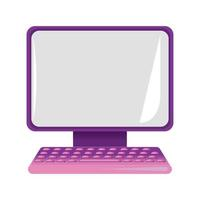
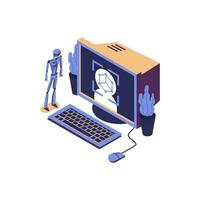

computer science
Computer is a electronic deviceA broad range of industrial and consumer products use computers as control systems. Simple special-purpose devices like microwave ovens and remote controls are included, as are factory devices like industrial robots and computer-aided design, as well as general-purpose devices like personal computers and mobile devices like smartphones. Computers power the Internet, which links billions of other computers and users.
COMPUTER DESIGN
A computer is an electronic device that kmanipulates information, or data. It has the ability to store, retrieve, and process data. You may already know that you can use a computer to type documents, send email, play games, and browse the Web.
COMPUTER DESIGN 1
A computer is an electronic device that manipulates information, or data. It has the ability to store, retrieve, and process data. You may already know that you can use a computer to type documents, send email, play games, and browse the Web.
COMPUTER DESIGN 2
A computer is an electronic device that manipulates information, or data. It has the ability to store, retrieve, and process data. You may already know that you can use a computer to type documents, send email, play games, and browse the Web.